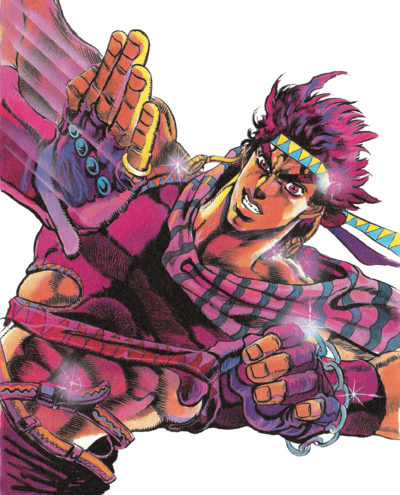
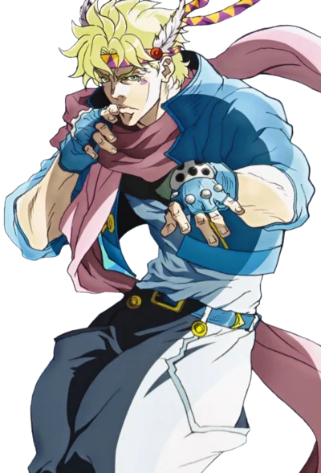

Battle Tendency is the second part of JoJo's Bizarre Adventure. It was serialized in Weekly Shonen Jump from 1987 to 1989 and adapted into a 2012 TV series by David Productions. It follows the adventures of Joseph Joestar, the grandson of Jonathan Joestar, the protagonist of the first part, Phantom Blood. The main conflict arises from ancient beings called the Pillar Men, creators of the Stone Mask, who desire a one-of-a-kind artifact known as the Red Stone of Aja to become ultimate beings.
After Joseph and Caesar, the grandson of Will Antonio Zeppeli (who trained Joseph's grandfather, Jonathan), become entangled in the Pillar Men's plot, they are given one month to master Hamon and defeat the Pillar Men. Otherwise, the poison implanted in them as a condition for their survival will kill them. Under the harsh training of Lisa Lisa—the foremost Hamon expert, who is later revealed to be Joseph's mother—and her two servants, Loggins and Messina, Joseph begins to grow stronger. Joseph eventually defeats the Pillar Man Esidisi, who had killed Loggins while successfully stealing the Red Stone of Aja and sending it to Switzerland.
With only a few days remaining, Joseph and his group pursue the Red Stone, seeking to retrieve it before Kars, the leader of the Pillar Men, succeeds in his plan. In their quest, they are aided by the Nazi army and its commander, Stroheim. With their assistance, they locate the Pillar Men, leading to intense battles. Caesar dies in combat against Wamuu, and Lisa Lisa is severely injured by Kars. With the inadvertent help of the Nazis, Kars transcends into the ultimate lifeform. Confident in his superiority, Kars chases Joseph into a volcano. However, Joseph uses his Hamon, which rivals the power of the sun’s surface, to set off the volcano, leading to Kars being launched into space, forever trapped in the vacuum.
Joseph miraculously survives the eruption and surprises everyone by showing up at his own funeral, reuniting with his friends.
The story begins with Joseph Joestar befriending a young man named Smokey. Joseph learns of the presumed death of Speedwagon at the hands of Straizo, who has transformed into a vampire. Joseph confronts Straizo and kills him. Meanwhile, Speedwagon has been kidnapped by the Nazi party in Brazil, who need his expertise on vampires to help them study the revived Pillar Man, Santana. Santana eventually escapes Nazi captivity and nearly kills Speedwagon before Joseph intervenes. Joseph defeats Santana and saves Speedwagon, who informs him that three other Pillar Men have been discovered sleeping beneath the Colosseum in Rome. Joseph travels to Rome, where he meets Caesar Antonio Zeppeli, the grandson of Will Antonio Zeppeli. Together, they visit the underground site where the Pillar Men awaken and massacre the German soldiers stationed there. Joseph and Caesar attempt to fight the Pillar Man Wamuu but are easily overpowered. Wamuu implants poison rings into both Joseph and Caesar, giving them 33 days to defeat him and earn the antidote.
Joseph and Caesar begin training under Lisa Lisa and her servants, Loggins and Messina. During this time, Joseph meets Suzie Q for the first time. However, Joseph’s training is interrupted when Esidisi kills Loggins and steals the Red Stone of Aja. Joseph defeats Esidisi but cannot prevent him from sending the Stone to Kars. The group travels to Switzerland, where, with the help of Stroheim, they locate Kars and retrieve the Red Stone. Caesar and Messina launch a hasty attack on the Pillar Men’s hideout, leading to Caesar’s death at the hands of Wamuu. In a final act, Caesar steals the antidote from Wamuu and delivers it to Joseph before succumbing to his injuries. Joseph and Lisa Lisa mourn Caesar’s death and vow to defeat the Pillar Men.
Joseph fulfills his promise to Wamuu by challenging him to a chariot duel in a newly built colosseum. After a hard-fought battle, Joseph defeats Wamuu and drinks the antidote. Meanwhile, Kars tricks Lisa Lisa during their duel, using a vampire double to stab her in the back and steal the Red Stone. Kars summons an army of vampires to kill the injured Hamon users, but they are incinerated by Stroheim’s platoon and the Speedwagon Foundation, who use UV lights to mimic sunlight. Seizing this opportunity, Kars uses the Red Stone of Aja with a custom Stone Mask to ascend into the ultimate lifeform. Now invincible, Kars basks in the sunlight and pursues Joseph for revenge. Joseph lures Kars to a volcano, where he discovers that even lava cannot harm him. As Kars gloats over his victory, he uses Hamon to finish off Joseph. However, Joseph redirects Kars’ attack into the volcano using the Red Stone, triggering an eruption that launches Kars into space. Trapped in the vacuum of space and unable to die, Kars becomes an eternal, lifeless rock. Weeks later, at Joseph’s funeral, his friends are shocked when Joseph appears, alive and well. He explains that he was saved by a fisherman and reveals that he married Suzie Q in Italy. The part ends humorously, with Joseph chasing Suzie after she forgot to inform his friends that he was alive, while his friends celebrate his return.


Comments